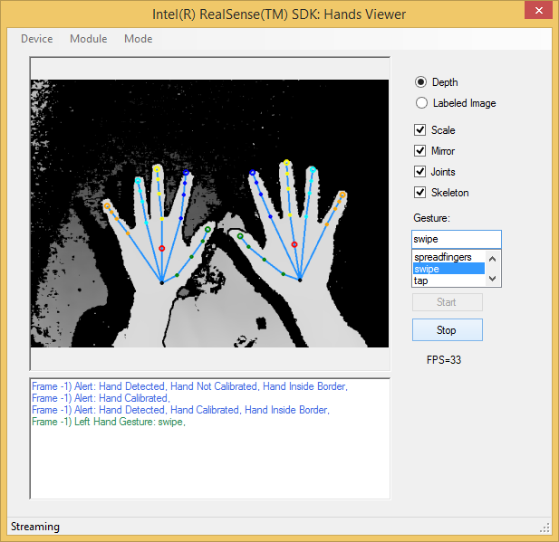

Sample: FF_HandsViewer[.cs] |
Top Previous Next |
|
Introduction The FF_HandsViewer[.cs] samples are GUI applications that demonstrate the SDK hand tracking feature. The samples demonstrate, among other, the tracked hand skeleton (joints and bones), the segmentation mask (separating hand from background) and the gesture recognition mechanism. Two versions of this sample are available, one using the C++ API and the other on top of the C# API. Launch The samples can be launched directly from the bin folder of the SDK installation, or compiled and executed using Microsoft Visual Studio. The project and source files are located inside the sample/FF_HandsViewer or framework/CSharp/FF_HandsViewer.cs folders, respectively. Menu Options From the menu, the user can select the input device, the hand tracking module, and the operating mode (live streaming mode, playback mode, and recording mode), as shown in Figure 131:  Figure 131: Sample hands_viewer GUI Options Click the Start button to load and activate the hand tracking module. Check the option Depth to display the depth stream, as illustrated in Figure 131. Check the option Labeled Image to display the labeled image. Check the Scale option to scale the images to the size of the display panel, and the Mirror option to mirror the images (flip around Y axis). Check the option Joints to visualize all 22 hand joints as colored circles. Check the option Skeleton to visualize the hand skeleton. Select an item in the Gesture list to recognize the specified gesture. If left empty, the sample does not recognize any gesture. Whenever there is a fired gesture or alert, the sample logging window displays the gesture or alert details. Finally, click the Stop button to terminate the tracking process.
|